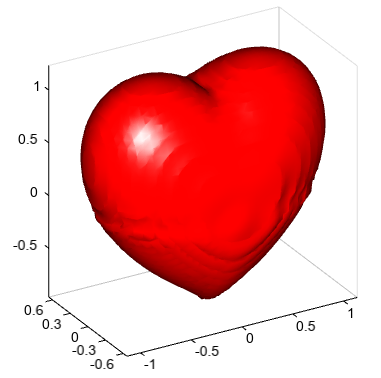

isosurface¶
- Axes3DGL.isosurface(*args, **kwargs):
creates a three-dimensional isosurface plot
- Parameters
x – (array_like) Optional. X coordinate array.
y – (array_like) Optional. Y coordinate array.
z – (array_like) Optional. Z coordinate array.
data – (array_like) 3D data array.
cmap – (string) Color map string.
nthread – (int) Thread number.
- Returns
Legend
Example of
isosurfacefunctionx = y = z = arange(-3, 3.1, 0.1) xx,yy,zz = meshgrid(x, y, z) v = xx*exp(-xx**2 - yy**2 - zz**2) #Plot lighting(position=[0,0,2,1], mat_specular=[1,1,1,1]) isosurface(x, y, z, v, 1e-5, color='c', edgecolor=None, nthread=4) xlim(-3, 3) xlabel('x') ylabel('y') zlabel('z')

Example of 3D heart plot
a = linspace(-3, 3, 100) x,y,z = meshgrid(a, a, a) p = (x**2+(9/4.)*y**2+z**2-1)**3-x**2*z**3-(9/80.)*y**2*z**3 lighting() isosurface(a, a, a, p, 0, facecolor='r', edgecolor=None, nthread=4)
Example of plotting 3D
isosurfaceof dust concentrations from dust model#Set date sdate = datetime.datetime(2019, 4, 17, 0) #Set directory datadir = 'D:/Temp/mm5' #Read data fn = os.path.join(datadir, 'WMO_SDS-WAS_Asian_Center_Model_Forecasting_CUACE-DUST_CMA_'+ sdate.strftime('%Y%m%d%H') + '.nc') f = addfile(fn) st = f.gettime(0) t = 10 dust = f['CONC_DUST'][t,:,:,:] levels = dust.dimvalue(0) dust[dust<5] = 0 height = meteolib.pressure_to_height_std(levels) lat = dust.dimvalue(1) lon = dust.dimvalue(2) #Relief data fn = 'D:/Temp/nc/elev.0.25-deg.nc' f = addfile(fn) elev = f['data'][0,'15:65','65:155'] elev[elev<0] = -1 lon1 = elev.dimvalue(1) lat1 = elev.dimvalue(0) lon1, lat1 = meshgrid(lon1, lat1) #Plot ax = axes3d() ax.set_rotation(348) ax.set_elevation(-29) lighting(True) levs = arange(0, 6000, 200) cols = makecolors(len(levs) + 1, cmap='MPL_terrain') cols[0] = 'w' ls = surf(lon1, lat1, elev, levs, colors=cols, edge=False) isosurface(lon, lat, height, dust, 100, color=[255,180,0,10], \ edge=False, nthread=4) colorbar(ls) xlim(65, 155) xlabel('Longitude') ylim(15, 65) ylabel('Latitude') zlim(0, 15000) zlabel('Height (m)') #zticks(arange(len(levels))[1:], levels[1:]) tt = st + datetime.timedelta(hours=t*3) title('Dust bigger than 100 ug/m3 (%s)' % tt.strftime('%Y-%m-%d %H:00'))